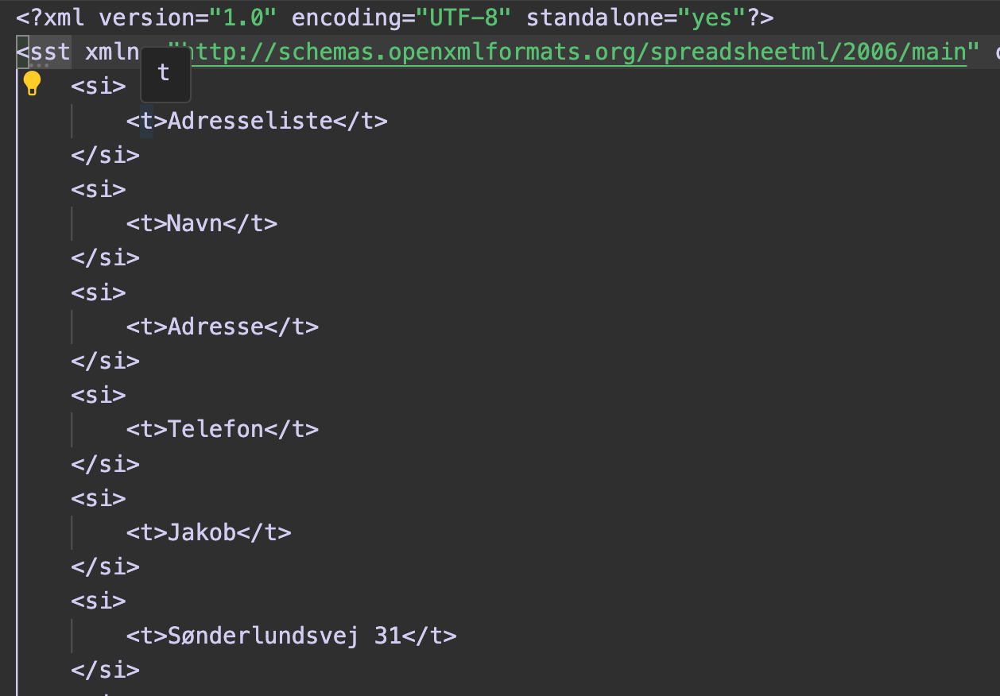

Rigsarkivet
Jobinterview
Nyt bevaringsformat til regneark
Indhold
- Introduktion
- Baggrund
- XML som bevaringsformat
- Overgangen til det nye format
Baggrund
Regneark
Program hvormed man kan lave beregninger og opstille data i tabelform.
En af de mest udbredte måder at gemme data på.
Historisk set:
- Lotus 1-2-3
- Excel
- Numbers
- OpenOffice Calc
- Google Sheets
- Nemt at bruge
- Nemt at dele data med andre.
Struktur?
üò¨
Modsat databaser - ingen krav til skema-definition
Alligevel er der struktur
Fx navngivne worksheets, der består af rækker og kolonner.
Men ofte meget renderingsorienteret, vha. positionering af tal og tekst.
En titel
tekst i en celle, der er centreret og skrevet med fed skrift.
Brugerdefinerede formler refererer til celler ved deres position, fx =B1+B2
Hvad er B1 og B2?
Du kan også referere til celler i navngivet form, fx =Areal*Pris
Men det er der jo ingen der gør
Altså, ingen semantik i data eller formler
Regneark er ikke data-only
Regneark er data og formatering/rendering
WYSIWYG
Vi er nødt til at anvende Excel for at forstå data
Er TIFF det bedste format til at gemme regneark?
Fordele:
- Excel (eller andet program) er ikke nødvendigt
- Visuel information bevares
- Diagrammer og grafer bevares
Ulemper:
- Svært at genskabe data
- Formler er ikke tilgængelige
Men kan vi undvære "beregningerne"?
Hvordan kom vi frem til det automatisk beregnede tal, der står i cellen?
Var tallet væsentlig for en historisk beslutning?
En regnefejl?
Hvorfor overveje et nyt format?
Noget information går tabt
Vi begrænser anvendelsen af data og formler
XML som bevaringsformat
Vi bør overveje et struktureret format i tillæg til TIFF
XML er et struktureret format
En .xlsx-fil er en zip-fil med XML-filer i OpenXML formatet
XML er et eXtensible
Kan du leve med at anvende '<' og '>'?
Kan du definere din struktur i et skema?
... så har du et nyt fil-format
XML giver mulighed for at definere semantik
XML dør ikke i morgen
Version 1.0 - 26 år siden
Version 1.1 - 17 år siden
Alverdens filformater baserer sig på XML
Eksempler: SVG, MathML, XHTML, ODF, OOXML, GML, EPUB, RSS, MusicXML, XBRL, etc.
Er det XML - er der en palette af værktøjer
Validér med skemaer
Søg med XPath
Transformér med XSLT
Supporteret i alle programmeringssprog, databaser osv.
XML-teknologier er internationale standarder og specifikationer er åbne
Så, XML forsvinder ikke i morgen, XML ændres ikke i morgen
Hvorfor ikke bruge OpenXML?
OpenXML er en ECMA standard
Download RelaxNG-skemaet for OpenXML fra:
https://ecma-international.org/publications-and-standards/standards/ecma-376/
Ulempen ved OpenXML - en meget kompleks standard

xl/worksheets/sheet1.xml
xl/worksheets/sheet1.xml

xl/sharedStrings.xml
OpenDocument Format (ODF) er en ISO standard
https://github.com/oasis-tcs/odf-tc/blob/master/src/main/resources/odf1.4/OpenDocument-v1.4-schema.rng
ODF er et "bedre" OpenXML
ODF er født med "RDFa" - Resource Description Framework in Attributes
RDF er en anden W3C standard, for metadata
Forslag
Vi bør overveje at gemme regneark i XML-format i tillæg til TIFF
OOXML eller ODF?
Begge formater er veldefinerede
CSV er ikke et godt match, da regneark er mere end en tabel
OOXML er komplekst, men udbredt
Use case: Sprogmodeller
Stort behov for at anvende semantik i dokumenter i forb. med træning af LLM'er
Høj skalerbarhed = snedige mennesker laver snedige løsninger
¯\_(ツ)_/¯
Væsentligt: Arkiver skemaerne m.v. fra ECMA/ISO
Overgangen til det nye format
Tabsfri konvertering .xls (binært) til .xlsx (XML)?
Lotus Notes?, Numbers?
Samarbejde med eksterne interessenter
Et lovkrav - ikke en naturlig driver
Skatteborgers penge
Pragmatiske løsninger
Indrage data-leverandør i udvikling af specifikation
Iterativ udvikling af specifikation og første-implementering
Samarbejde med interne interessenter
Involvere testere og arkivarer
Acceptance test af konvertering på virkelige regneark
Involvere IT-udviklere
Hvordan skal en indhentningspipeline fungere?
Arkiveringsparkke-format - behov for ændringer?
Beskrive krav til XML bevaringsformater, bl.a. ved henvisning til de konkrete versioner af struktur skema'erne
Evt. udvikle schematron schema, hvor struktur skema'erne ikke er tilstrækkelige
Schematron definerer business-rules (assertions), der ikke kan defineres i skemaer
Eksempel på Schematron
<schematron xmlns="http://purl.oclc.org/dsdl/schematron">
<ns prefix="x" uri="http://schemas.openxmlformats.org/spreadsheetml/2006/main"/>
<pattern id="check-for-missing-worksheets">
<title>Check for missing worksheet files in xl/worksheets directory</title>
<!-- Rule to check that each sheet has a corresponding worksheet file -->
<rule context="x:sheets/x:sheet">
<assert test="doc-available(concat('xl/worksheets/sheet', @sheetId, '.xml'))">
Worksheet file 'xl/worksheets/sheet{@sheetId}.xml' is missing.
</assert>
</rule>
</pattern>
</schematron>
Use case: Begrænse indholdet, uden at ændre struktur skema'er
Pointe: Skema-drevet udvikling er et stærkt redskab
Vi deklarer, hvad vi ønsker = low-code løsning
Deklarativt og tæt på specifikationen
Udvikle værktøjer til validering af regnark i XML-format
Testkørsel af validering på stort datamateriale, tilfældigt udvalgt
Jeg forestiller mig at stille skema'er, eksempel-filer, dokumentation og kildekode til rådighed via git repository